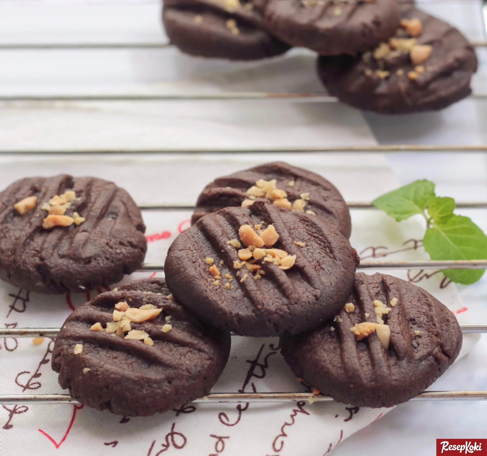

Resep kue kering Coklat Lumer

Bahan-Bahan:
- 200 gram tepung terigu
- 100 gram gula pasir
- 2 sendok teh baking powder
- 1/2 sendok teh garam
- 150 gram mentega
- 3 butir telur
- 50 ml susu cair
- 1/4 cangkir bubuk coklat
- 1/2 cangkir cokelat chips
Langkah-Langkah:
- Langkah 1 :
- Pertama-tama, campur semua bahan kering (tepung terigu, gula pasir, baking powder, garam, dan bubuk coklat) dalam mangkuk besar. Aduk hingga merata.
- Langkah 2 :
- Kemudian, masukkan mentega dan telur ke dalam mangkuk. Uleni dengan mixer hingga menjadi adonan lembut.
- Langkah 3 :
- Setelah itu, tuangkan susu cair sedikit demi sedikit ke dalam adonan. Aduk hingga rata.
- Langkah 4 :
- Terakhir, masukkan cokelat chips ke dalam adonan. Aduk hingga merata.
- Langkah 5 :
- Ambil sejumput adonan dan bentuk bulat-bulat. Letakkan di atas loyang yang sudah dialasi dengan kertas roti.
- Langkah 6 :
- Panggang kue kering coklat lumer di mulut di oven yang sudah dipanaskan selama 15-20 menit.
- Langkah 7 :
- Angkat dan biarkan dingin sebelum disajikan.